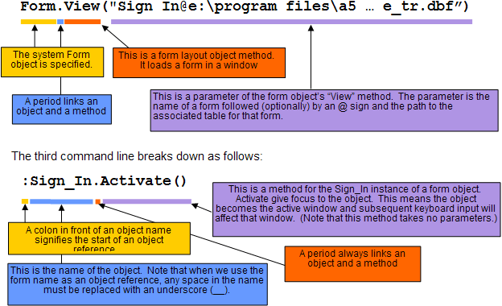

Object Addresses - Learning Xbasic
Object addresses are basically object names. You can refer to an object in an Xbasic script by using the object name. Earlier in this book, you saw that when you use a command from the Alpha Anywhere menus, Alpha Five is in fact executing Xbasic commands to carry out your request. So if you open the Phone Messages database, and highlight the Sign In form in the Form tab of the Control Panel, and then click Form > View from the Main Menu, the Sign In form will load. When you click on Form, View, Alpha Anywhere executes these three Xbasic commands:
|
Form.View("Sign In@e:\program files\a5v5\learning xbasic\message_tr.dbf") :Sign_In.resynch() :Sign_In.activate() |
These commands, in turn, invoke the View method of the Form layout system object (with a form layout name as the parameter) and then the instance of the Sign In form object. The diagram below explains the components of the first and third command lines.
The first command line breaks down as follows:

Some general rules for object addressing can be learned from these examples.
System objects are referenced by their own names; for example: "ControlPanel", "Form", "CodeEditor".
Other objects are referenced by their given names (with spaces replaced by underscores); for example: "Sign_in", "Monthly_Aging_Report", "QuickBrowse".
Objects names are followed by a period which, in turn, is followed by the property or method which you are referencing.
A colon (:) is used in front of an object name to unambiguously refer to an object that may be a sub-object of another object. (More about this below).
In this next exercise you will use the Alpha Anywhere Form, View commands and see in the script recorder the behind the scenes Xbasic commands that Alpha Anywhere generates.
Exercise 7 - Using the Script Recorder to see Alpha Anywhere Xbasic commands
Open the Phone Messages database.
Click on the Form tab of the Control Panel.
Highlight (click once on) the Sign In form. (Do not double click or the form will open. If it does, simply click on the
 in the top right corner of the window to close the form).
in the top right corner of the window to close the form).From the Main Menu, select View, then Script Recorder Window as shown in Figure 28.
Now check the Record Script check box in the Script Recorder w indow. Alpha Anywhere will now record your menu selections as Xbasic script commands.
Now click on Window, then Control Panel. The Control Panel displays. The Sign In form layout name should still be highlighted on the Forms tab.
Select Form, then View. The Sign In form appears.
Now click the Please Login button. A pop-up logon window appears. Click the Cancel button.
Click the Exit button on the form. (Do not click the X in the top right or Alpha Five will close!)
Click Window, then Script Recorder. You will see the following commands in the script recorder window.

Figure 28

Figure 29
|
:Sign_In.resynch() :Sign_In.resynch() :Sign_In.activate() :Sign_In:BUTTON1.activate() :Sign_In:BUTTON3.activate() :Script_Recorder.activate() |
You should recognize some of the references to objects and methods that are shown above. Note the fourth line. In this line the BUTTON1 object (a button control) is a sub-object (or child object) of the Sign_In form object. A colon separates the BUTTON1 object and the Sign_In object. The : makes the reference to an object explicit. References to sub-objects can also be relative. A relative reference (without a preceding :) causes Alpha Anywhere to search for that object in the current container. A container is simply an object that can contain other objects. (The Alpha Five program itself is the topmost container any window objects you reference are in the top container). Referring to a sub-object with a relative reference makes it easier to change your code later on or use a sub-object, such as a control, among different forms without having to change the Xbasic object references in any scripts associated with that control.
Click on the Close Recorder button in the Script Recorder toolbar to close it.
|
Explicit and relative references to sub-objects Objects that contain other objects are also referred to as containers. When you identify a sub-object in an Xbasic script, Alpha Anywhere assumes that reference is to an object in the current container. This means that you do not have to specify the container name if you are referring to a sub-object within the same container. For example, consider a form object named Elapsed Seconds that has a button (a control named BUTTON1). When pushed, BUTTON1 resets a counter of elapsed seconds and displays the seconds in another control on the same form (a field control named FIELD1). The OnPush event script for BUTTON1 has an Xbasic command:
This command, which runs the refresh method for the field control object, FIELD1, is referencing the FIELD1 control from the BUTTON1 control. Both FIELD1 and BUTTON1 are controls on the same form. They are both in the same container form layout object - Elapsed_Seconds. The Xbasic command above could have been written:
However the :Elapsed_Seconds is not necessary since the current container is :Elapsed_Seconds. If you leave off :Elapsed_Seconds, you must leave off the : (colon) in front of FIELD1. If you start an object reference with a :, Alpha Anywhere looks for the object starting at the top level (Alpha Five itself) and not in the current container. |
Next